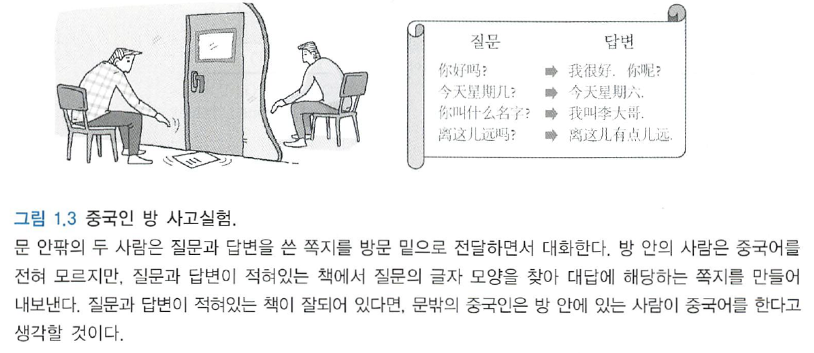

midterm review
지능 (knowledge)
본능적이나 자동적으로 행동하는 대신에, 생각하고 이해하여 행동하는 능력
인공지능 (artificial intelligence)
인공적으로 만든 지능
사람의 생각과 관련된 활동
- 의사결정, 문제해결, 학습 등의 활동을 자동화하는 것
사람이 하면 더 잘할 수 있는 일을 컴퓨터가 하도록 하는 방법을 찾는 학문
지능이 요구되는 일을 할 수 있는 기계를 만드는 예술
지능적인 에이전트를 설계하는 학문
인지하고 추론하고 행동할 수 있도록 하는 컴퓨팅에 관련된 학문
인공물이 지능적인 행위를 하도록 하는 것
사람이 의식적으로 하는 행동을 컴퓨터가 할 수 있도록 하는 것
Turing test (튜링 테스트)
지능의 조작적 정의 (operational definition)
- 조작적 정의 - 측정할 수 있는 조건으로 추상적 속성을 기술
imitation game (흉내 게임)
Dartmouth conference ,1956에서 John Maccarthy가 AI 용어 제안
강한 인공지능 (strong AI)
사람과 같은 지능
마음을 가지고 사람처럼 느끼면서 지능적으로 행동하는 기계
추론, 문제해결, 판단, 계획, 의사소통, 자아의식 (self-awareness), 감정 (sentiment), 지혜 (sapience), 양심 (conscience)
튜링테스트
약한 인공지능 (weak AI, narrow AI)
특정 문제를 해결하는 지능적 행동
사람의 지능적 행동을 흉내 낼 수 있는 수준
대부분의 인공지능 접근 방향
중국인 방 사고실험 (Chinese room thought experiment)

문 밑으로 중국어로 쓴 질문지를 전달
방 안에서 중국어를 모르는 사람이 글자모양에 따른 중국어 단어 조합 방법 매뉴얼을 참조하여 답변에 대한 단어 조합
조합된 단어들을 문 밖으로 내보냄
문 밖 사람은 중국어를 이해하는 사람이 방 안에 있다고 생각
단지 흉내만 내고 이해하는 것은 아님 → 이해하지 못하고 흉내낼 수 있어도 지능적 (intelligent) 행동
인공지능의 역사

1960년 이전
1946년 펜실베니아 대학, ENIAC 개발
큰 기대와 여러가지 시도, 매우 제한된 성공
LISP 언어 개발
논리 기반 지식표현 및 추론
perceptron 모델
- 초기 신경망 모델
수단-목표 분석 (means-ends analysis) 기법
- 범용 문제해결을 목표로 한 GPS (General Problem Solver) 개발
Means-ends analysis
해결해야 하는 문제를 상태 (state)로 정의
현재 상태와 목적 상태 (goal state) 간의 차이 계산
목적 상태로 도달하기 위한 조작자 (operator, 연산자) 선택 적용하는 과정의 반복


조작자 - 문제의 상태를 변화시키는 데 사용하는 작업이나 행동
1970년대에서 1980년대 초반
일반적인 방법보다는 특정 문제 영역에 효과적인 방법을 찾는 연구
전문가 시스템 (expert system)
- 특정 영역의 문제에 대해서는 전문가 수준의 해답을 제공
- 1970년대 초반부터 1980년대 중반 상업적 성공 사례
- MYCIN, PROSPECTOR, DENDRAL
전문가 시스템 개발 도구 (expert system shell) 개발
Prolog 언어 개발
- 지식의 표현과 추론을 지원하는 논리 (logic) 기반 언어
MYCIN
스탠포드 대학에서 개발한 전염성 혈액 질환 진단
일반 의사보다 높은 정확도
PROSPECTOR
광물탐사 데이터 분석
DENDRAL
화학식과 질량 스펙트럼 데이터로부터 유기화합물의 분자구조 결정
스탠포드 대학의 Edward Feigenbaum 팀 개발


1980년대 중반에서 1990년대
신경망 모델 발전
- 다층 퍼셉트론 (multi-layer perceptron, MLP) - 신경망의 르네상스
- 오차 역전파 (error backpropagation) 알고리즘

퍼지이론 (fuzzy theory)
- 언어적인 애매한 정보를 정량화하여 표현
진화연산
- 진화개념을 문제해결에 도입
- 유전자 알고리즘, 진화 프로그래밍 등
확률적 그래프 모델
- 그래프 이론과 확률론을 결합
- 컴퓨터 비전, 로보틱스, 자연어 처리, 진단 등에 적용
서포트 벡터 머신 (support vector machine, SVM)
2000년대 이후
에이전트 (agent)
- 위임받은 일을 자율적으로 처리
시맨틱 웹 (semantic web)
- 컴퓨터가 웹 상의 자원을 이해하여 처리
기계학습 (machine learning)
데이터 마이닝 (data mining)
딥러닝 (deep learning)
상업적 성공사례 다수 출현
- 애플 Siri, 구글 now, MS Cortana
- IBM Watson
- 로봇 - Boston dynamics 군사용 로봇 BigDog, 재난구조 로봇 Atlas
- 자율주행 자동차
- 클라우드 앱 서비스
튜링테스트 최초 통과 프로그램
Eugene Goostman
13세인 우크라이나 소년 캐릭터의 챗봇 (chatbot)
튜링 사망 60주년을 기념하여 진행한 이벤트에서 튜링 테스트 통과
- 30명의 검사자가 5분씩 대화, 33%가 사람으로 판정
- 제한적 상황에 대한 통과


인공지능의 연구분야 - 요소 기술
탐색 (search)
문제의 답이 될 수 있는 것들의 집합을 공간 (space)으로 간주하고, 문제에 대한 최적의 해를 찾기 위해 공간을 체계적으로 찾아보는 것
무정보탐색
- bfs, dfs
휴리스틱 탐색
- 언덕오르기 탐색, 최선 우선탐색, 빔 탐색, A* 알고리즘
게임트리 탐색
- mini-max 알고리즘, \(\alpha-\beta\) 가지치기 (pruning), Monte Carlo tree search

지식표현 (knowledge representation)
문제 해결에 이용하거나 심층적 추론을 할 수 있도록 지식을 효과적으로 표현하는 방법
- IF-THEN 규칙 (rule)
- frame (프레임)
- semantic net (의미망)
- 논리 (logic) - 명제논리 (propositional logic), 술어논리 (predicate logic)
- 스트립트
- 불확실한 지식 표현
- 확률 그래프 모델
- 온톨로지 기술 언어: RDF, OWL
추론 (inference)
가정이나 전제로부터 결론을 이끌어내는 것
규칙기반 시스템의 추론
- 전향 추론 (forward inference) - 결론 도출
- 후향 추론 (backward inference) - 전제 도출
확률모델의 추론
- 관심 대상의 확률 또는 확률분포를 결정하는 것
- 베이즈 정리 (Bayesian theorem) 및 주변화 (marginalization) 이용
\[ P(A) = \sum_{b}{P(A, B = b)} \]
\[ P(A|B) = \frac{P(B|A)P(A)}{P(B)} \]

기계학습 (machine learning)
경험을 통해서 나중에 유사하거나 같은 일 (task)를 더 효율적으로 처리할 수 있도록 시스템의 구조나 파라미터를 바꾸는 것
컴퓨터가 지식을 갖게 만드는 작업
supervised learning (지도학습)
- 입력과 대응하는 출력을 데이터로 제공하고 대응관계의 함수 찾기
- 입력 (문제)과 대응하는 출력 (답)을 데이터로 제공하고 대응 관계의 함수 또는 패턴을 찾는 것
- 분류, 회귀

비지도학습 (unsupervised learning)
- 데이터만 주어진 상태에서 유사한 것들을 서로 묶어 군집을 찾거나 확률분포 표현
- 답이 없는 문제들만 있는 데이터들로 부터 패턴을 추출하는 것
- 군집화, 밀도추정, 토픽 모델링

강화학습 (reinforcement learning)
- 상황별 행동에 따른 시스템의 보상 값(reward value)만을 이용하여 시스템에 대한 바람직한 행동 정책(policy) 찾기
- 문제에 대한 직접적인 답을 주지는 않지만 경험을 통해 기대보상 (expected reward)이 최대가 되는 정책 (policy)을 찾는 학습


계획수립 (planning)
현재 상태에서 목표하는 상태에 도달하기 위해 수행해야 할 일련의 행동 순서를 결정하는 것
작업 수행 절차 계획
로봇의 움직임 계획

주요 응용 분야
전문가 시스템 (expert system)
특정 문제 영역에 대해 전문가 수준의 해법을 제공하는 것
간단한 제어시스템에서부터 복잡한 계산과 추론을 요구하는 의료 진단, 고장 진단, 추천시스템
작업 중요도가 높은 분야의 경우 추천 정보로 활용
- 최종 결정은 현장 작업자가 담당
- 원자력 발전소, 항공우주 분야 등
지식 표현과 추론 부분을 분리하여 구성
- 지식만 변경하면 변화하는 환경에 쉽게 대응
규칙기반 시스템 (rule-based system)을 통한 구현
데이터 마이닝 (data mining)
실제 대규모 데이터에서 암묵적인, 이전에 알려지지 않은, 잠재적으로 유용할 것 같은 정보를 추출하는 체계적인 과정
기계학습, 통계학 기법 적용
연관 규칙, 분류 패턴, 군집화 패턴, 텍스트 마이닝, 그래프 마이닝, 추천, 시각화 (visualization)

패턴 인식 (pattern recognition)
데이터에 있는 패턴이나 규칙성을 찾는 것
문자 인식 - 인쇄체, 필기체
음성인식
영상인식
텍스트 패턴 인식 (텍스트 마이닝)
센서 신호 인식 (레이더, 라이다, 소나 등)
이상치 (outlier) 탐지
자연어 처리 (natural language processing)
사람이 사용하는 일반 언어로 작성된 문서를 처리하고 이해하는 분야 형태소 부분석, 구문 분석, 품사 태깅, 의미 분석
언어모델, 주제어 추출, 개체명 인식
문서 요약
기계번역 (machine translation)
질의 응답

컴퓨터 비전 (computer vision)
컴퓨터를 이용하여 시각 기능을 갖는 기계장치를 만들려는 분야

음성인식
사람의 음성 언어를 컴퓨터가 해석해 그 내용을 문자 데이터로 전환하는 처리


로보틱스 (robotics)
로봇에 관련된 기술 분야로서 기계공학, 센서공학, 마이크로 일렉트로닉스, 인공지능 기술 등을 종합적으로 활용
지능로봇 (intelligent robots)
- 인공지능 기술을 활용하는 로봇

에이전트 (agent)
사용자로부터 위임받은 일을 자율적으로 수행하는 시스템

소프트웨어 에이전트 (software agent)
- 채팅 봇 (chatting bot) - Siri, Tay
물리적 에이전트 (physical agent)
- 로봇 (robot)
반응형 에이전트 (reactive agent)
- 단순히 입력에 대해서 정해진 반응
숙고형 에이전트 (deliberate agent)
- 자신의 지식을 활용하여 목표를 달성하기 위한 계획을 수립하고 수행
학습 에이전트
- 경험 (즉, 행동과 그 결과)이 누적됨에 따라 점점 똑똑해지도록 학습
최근 동향
휴대전화의 위상 변화
통신 단말 → 정보 단말 (지능화)
인공지능 비서 서비스
애플의 Siri와 구글의 Now
음성으로 대화하면서 필요한 정보를 제공받을 수 있는 서비스
음성인식 (voice recognition)
자연어 처리 (natural language processing)
정보검색 (information retrieval)
추천 (recommendation)
IBM Watson
자연어로 주어진 질문에 대답을 하는 인공지능 시스템
자연어 처리, 정보 검색, 지식 표현 및 추론, 기계학습 이용 질의에 대한 답변
- 비구조화 데이터 (unstructured data) 분석
- 복잡한 질문 이해
- 답변 제공
- 의료, 금융, 유통 등 다양한 분야에 활용
ExoBrain 프로젝트
한국어 질의응답 시스템
자율주행 자동차 (driverless car)
구글 자동차
- 2017년 누적 주행 거리가 600만 킬로미터 이상인 주행 테스트
- 자회사 Waymo에서 자율주행 자동차 개발
유수 자동차 회사 및 IT 기업에서 개발연구 진행
- Tesla Motors, Volvo, GM, Daimler, Ford, Audi, BMW, Hyundai, Naver Labs 등
미국 자동차공학회 (SAE)의 자동화 단계
- 단계 0 - 완전 수동
- 단계 1 - 차선 유지, 자동 크루즈, 자동 주차 등 운전자 보조 수준
- 단계 2 - 특정 조건에서 자율 주행을 하지만, 운전자가 주목을 해야 하는 부분 자동화 수준
- 단계 3 - 특정 조건에서 자율주행이 되는 조건부 자율주행 수준
- 단계 4 - 고도 자동화 수준
- 단계 5 - 완전 자동화 수준
로보틱스
다양한 상황에서 적합한 행동을 하기 위한 여러 인공지능 기술 활용

기계번역 (machine translation)
Google translate
- 언어간 교차번역
인공지능 바둑 프로그램 (AlphaGo)
- 구글 DeepMind 개발
- 기계학습과 병렬처리로 구현
클라우드 서비스 앱
스마트폰을 데이터 입출력 단말기로 사용
핵심 처리는 클라우드 서버에서 담당
구글의 앱 goggles
- 이미지 인식 스마트폰 앱
- 기기에서 찍힌 사진을 기반으로 한 검색
deep learning의 컴퓨터 비전에서 성공적 사례
영상분류
의미적 영역 분할
객체검출

이미지 주석달기

화풍에 따른 그림 그리지

인공지능의 영향
인공지능 기술 도입
자동화 → 생산성 향상
일자리 문제
- 블루칼라 일자리 축소
- 화이트칼라 일자리 축소
- 금융 및 법률분야 - 복잡한 데이터 분석 수행
- 언론분야 - 로봇 저널리즘
- 의료분야 - 진단 및 처방
- 신규 직업 출현 기대
- 노동력 잉여 발생
사회적 문제 초래
- 고용 및 일자리, 기회의 불평등, 양극화 등
인공지능의 윤리
자율주행 자동차의 돌발 상황에 대한 프로그래밍
- 모든 가능한 상황에 대한 고려 필요
- 돌발 상황에서 희생자를 선택하는 프로그래밍 요구

마음이 없는 인공지능
살상용 자율무기 (LAWS: Lethal autonomous weapon systems)
- 인간의 개입 없이 스스로 표적을 찾아내고 제거하는 무기
- 잘못된 판단의 문제
- 인명 살상을 위한 프로그래밍
인공지능 기술의 오용
개인 신원 확인 기술
- 지문, 얼굴사진, 목소리, 필체 등
인공지능 기술 이용한 위조 데이터 생성
- 사생활 침해
- 인간 존엄성 도전
특이점 (singularity)
기술의 수준이 어느 한 순간 기하급수적으로 증가하는 시점
인공지능의 특이점
- 인공지능이 인간의 지능보다 더 진보하게 되는 시점
상태 공간과 탐색
탐색 (search)

문제의 해 (solution)이 될 수 있는 것들의 집합을 공간 (space)으로 간주하고, 문제에 대한 최적의 해를 찾기 위해 공간을 체계적으로 찾아보는 것

해 (solution) - 일련의 동작으로 구성되거나 하나의 상태로 구성
상태 (state) - 특정 시점에 문제의 세계가 처해있는 상황
세계 (world) - 문제에 포함된 대상들과 이들의 상황을 포괄적으로 지칭
상태공간 (state space)
- 문제 해결 과정에서 초기 상태로부터 도달할 수 있는 모든 상태들의 집합
- 문제의 해가 될 가능성이 있는 모든 상태들의 집합
- 초기상태 (initial state) - 문제가 주어진 시점의 시작 상태
- 목표상태 (goal state) - 문제에서 원하는 최종 상태
상태공간 그래프 (state space graph)
상태공간에서 각 행동에 따른 상태의 변화를 나타낸 그래프
- 노드 - 상태
- 링크 - 행동
일반적인 문제에서는 상태공간이 매우 큼
- 미리 상태 공간 그래프를 만들기 어려움
- 탐색과정에서 그래프 생성


맹목적 탐색 (blind search)
상태 공간 정보를 이용하지 않고 정해진 순서에 따라 상태 공간 그래프를 점차 생성해가면서 해를 탐색하는 방법
깊이 우선 탐색 (depth-first search, DFS)
초기 노드에서 시작하여 깊이 방향으로 탐색
목표 노드에 도달하면 종료
더 이상 진행할 수 없으면, 백트래킹 (backtracking, 되짚어가기)
방문한 노드는 재방문하지 않음


메모리공간 사용 효율적
최단경로 해 탐색 보장 불가
너비 우선 탐색 (breadth-first search, BFS)
초기 노드에서 시작하여 모든 자식 노드를 확장하여 생성
목표 노드가 없으면 단말노드에서 다시 자식 노드 확장


최단경로 해 탐색 보장
메모리 공간 사용 비효율
반복적 깊이심화 탐색 (interative-deepening search)
깊이 한계가 있는 깊이 우선탐색을 반복적으로 적용

최단경로 해 보장
메모리 공간 사용 효율적
반복적 깊이 우선 탐색에 따른 비효율성
- 실제 비용이 크게 늘지 않음
맹목적 탐색 적용 시 우선 고려 대상
양방향 탐색 (bidirectional search)
초기 노드와 목적 노드에서 동시에 너비 우선 탐색을 진행
중간에 만나도록하여 초기 노드에서 목표노드로 최단 경로를 찾는 방법

정보이용 탐색 (informed search)
휴리스틱 탐색 (heuristic search)
언덕 오르기 방법, 최상 우선 탐색, 빔 탐색, A* 알고리즘 등
Heuristic (휴리스틱)
시간이나 정보가 불충분하여 합리적인 판단을 할 수 없거나, 굳이 체계적이고 합리적인 판단을 할 필요가 없는 상황에서 신속하게 어림짐작하는 것

언덕오르기 방법 (hill climbing method)
지역 탐색 (local search), 휴리스틱 탐색 (heuristic search), greedy algorithm
현재 노드에서 휴리스틱에 의한 평가값이 가장 좋은 이웃 노드 하나를 확장해가는 탐색방법 → 탐욕 알고리즘 (greedy algorithm)
국소 최적해 (local optimal solution)에 빠질 가능성

최상 우선 탐색 (best-first search)
확장 중인 노드들 중에서 목표 노드까지 남은 거리가 가장 짧은 노드를 확장하여 탐색
남은 거리를 정확히 알 수 없으므로 휴리스틱 사용


beam search (빔 탐색)
휴리스틱에 의한 평가값이 우수한 일정 개수의 확장 가능한 노드만을 메로리에 관리하면서 최상 우선탐색을 적용


A* 알고리즘
추정한 전체 비용 \(\hat{f}(n)\)을 최소로 하는 노드를 확장해 가는 방법
\(f(n)\): 노드 n을 경유하는 전체 비용
- 현재 노드 n까지 이미 투입된 비용 \(g(n)\)과 목표 노드까지의 남은 비용 \(h(n)\)의 합
\[ f(n) = g(n) + h(n) \]
\(h(n)\): 남은 비용의 정확한 예측 불가
- \(\hat{h}(n)\): \(h(n)\)에 대응하는 휴리스틱 함수 (heuristic function)
\(\hat{f}(n)\): 노드 n을 경유하는 추정 전체 비용
- \(\hat{f}(n) = g(n) + \hat{h}(n)\)

허용성 (admissibility)
\(\hat{h}(n) \leq h(n)\)이면, 허용성을 갖는다. 허용성을 갖는 휴리스틱 함수를 사용하는 A* 알고리즘은 항상 최적해를 찾는다는 것이 증명되어 있다.

게임에서의 탐색
게임트리 (game tree)
상대가 있는 게임에서 자신과 상대방의 가능한 게임 상태를 나타낸 트리
- tac-tac-toc, 바둑, 장기, 체스 등
게임의 결과는 마지막에 결정
많은 수 (lookahead)를 볼 수록 유리
mini-max 게임 트리

mini-max algorithm
MAX node - 자신에 해당하는 노드로 자기에게 유리한 최대값 선택
MIN node - 상대방에 해당하는 노드로 최소값 선택
단말 노드부터 위로 올라가면서 최소 (minimum)-최대 (maximum) 연산을 반복하여 자신이 선택할 수 있는 방법 중 가장 좋은 것 같은 값을 결정


\(\alpha-\beta\) 가지치기 (prunning)
검토해 볼 필요가 없는 부분을 탐색하지 않도록 하는 기법
깊이 우선 탐색으로 제한 깊이까지 탐색을 하면서, max node와 min node의 값 결정
- \(\alpha\) 자르기 (cut-off) - MIN 노드의 현재 값이 부모노드의 현재 값보다 작거나 같으면, 나머지 자식 노드 탐색 중지
- \(\beta\) 자르기 - MAX 노드의 현재 값이 부모노드의 현재 값보다 같거나 크면, 나머지 자식 노드 탐색 중지

몬테 카를로 시뮬레이션 (Monte Carlo Simulation)
특정 확률 분포로부터 무작위 표본 (random sample)을 생성하고, 이 표본에 따라 행동을 하는 과정을 반복하여 결과를 확인하고, 이러한 결과확인 과정을 반복하여 최종 결정을 하는 것
Monte Carlo Tree Search, MCTS (몬테카를로 트리 탐색)
형세 판단을 위해 휴리스틱이 필요 없음
단말노드 상태에서 무작위로 게임을 많이 해보는 것


탐색 공간 (search space)을 무작위 표본추출 (ramdom sampling)을 하면서, 탐색트리를 확장하여 가장 좋아 보이는 것을 선택하는 휴리스틱 탐색방법
4개 단계를 반복하여 시간이 허용하는 동안 트리 확장 및 시뮬레이션
선택 (selection) → 확장 (expansion) → 시뮬레이션 (simulation): Monte Carlo Simulation → 역전파 (back propagation)

일정 깊이까지 탐색하지 않고, 도움이 될 것 같은 부분을 점진적으로 확장해가며 게임 트리를 만들어 감.
selection (선택): tree policy 적용
루트노드에서 시작
정책에 따라 자식 노드를 선택하여 단말 노드까지 내려감
- 승률과 노드 방문횟수 고려하여 선택
- UCB (Upper Confidence Bound) 정책: UCB가 큰 것 선택
\[ \frac{Q(v^`)}{N(v^`)} + C \sqrt{\frac{2 \ln{N(v)}}{N(v^`)}} \]
\(v:\) 부모노드, \(v`:\) 자식노드, \(N(v^`):\) 방문 횟수, \(Q(v^`):\) 점수 (이긴 횟수)
상수 C는 이미 해본 게임에서의 승률을 반영하는 정도와 방문횟수가 작은 노드를 더 탐색해보도록 하는 기회의 반영 정도를 조절 → C가 크면 기회를 더 많이 반영
판의 형세 판단을 위해 휴리스틱을 사용하는 대신, 가능한 많은 수의 몬테카를로 시뮬레이션 수행
일정 조건을 만족하는 부분은 트리로 구성하고, 나머지 부분은 몬테카를로 시뮬레이션
- 가능성이 높은 수(move)들에 대해서 노드를 생성하여 트리의 탐색 폭을 줄이고, 트리 깊이를 늘리지 않기 위해 몬테카를로 시뮬레이션을 적용
- 탐색공간 축소
확장 (expansion)
단말노드에서 트리 정책에 따라 노드 추가
- ex) 일정 횟수 이상 시도된 수 (move)가 있으면 해당 수에 대한 노드 추가
시뮬레이션 (simulation)
기본 정책 (default policy)에 의한 몬테카를로 시뮬레이션 적용
무작위 선택 (random moves) 또는 약간 똑똑한 방법으로 게임 끝날 때까지 진행
역전파 (backpropagation)
단말 노드에서 루트 노드까지 올라가면서 승점 반영

동작 선택 방법
가장 승률이 높은, 루트의 자식 노드 선택
가장 빈번하게 방문한, 루트의 자식 노드 선택
승률과 빈도가 가장 큰, 루트의 자식 노드 선택
- 없으면 조건을 만족하는 것이 나올 때가지 탐색 반복
자식 노드의 confidence bound 값의 최소 값이 가장 큰, 루트의 자식 노드 선택
제약조건 만족 문제 (constraint satisfaction problem)
주어진 제약조건을 만족하는 해 (solution)를 찾는 문제
탐색 관점에서 볼 때 목표상태는 제약조건을 모두 만족해야 함
문제 영역의 변수 (domain variable), 변수가 가질 수 있는 후보 값의 집합, 제약 조건들로 정의됨

탐색 기반의 해결방법
- 백트래킹 탐색
- 제약조건 전파
backtracking search
깊이 우선 탐색을 하는 것처럼 변수에 허용되는 값을 하나씩 대입
모든 가능한 값을 대입해서 만족하는 것이 없으면 이전 단계로 돌아가서 이전 단계의 변수에 다른 값을 대입

제약조건 전파 (constraint propagation)
인접 변수 간의 제약조건에 따라 각 변수에 허용될 수 없는 값들을 제거하는 방식


최적화 (optimization)
여러가지 허용되는 값들 중에서 주어진 기준을 가장 잘 만족하는 것을 선택하는 것 → 최적 조건의 값들을 찾는 탐색문제임
제약조건 (contraint condition)
목적함수 (objective function)
- 최적화 문제에서 최적해는 목적함수의 값을 최소 또는 최대가 되는 값임
조합 최적화 (combinational optimization)
- 유전 알고리즘
함수 최적화 (function optimization)
- 최대 경사법
- 제약함수 최적화
조합 최적화 (combinational optimization)
순회 판매자 문제 (TSP)와 같이 주어진 항목들의 조합으로 해가 표현되는 최적화 문제
제약조건 - 모든 도시를 한 번만 경유함
목적함수 - 경로의 길이

대부분 NP-hard 문제
- 최적해를 구하는 것은 포기하고 근사해 (suboptimal solution)를 빠른 시간 안에 찾으려고 함
유전알고리즘 (genetic algorithm, GA)
생물의 진화를 모방한 집단 기반의 확률점 탐색 기법
대표적인 진화 연산 (evolutionary computation)의 하나
- 유전 알고리즘, 유전자 프로그래밍 (genetic programming), 진화 전략 (evolutionary strategy)
생물의 진화
- 염색체 (chromosome)의 유전자 (gene)들이 개체 정보 코딩

- 적자생존 (fittest survival) / 자연선택 (natural selection)
- 환경에 적합도가 높은 개체의 높은 생존 및 후손 번성 가능성
- 우수 개체들의 높은 자손 증식 기회
- 열등 개체들도 작지만 증식 기회

- 집단(population)의 진화
- 세대 (generation) 집단의 변화
- 형질 유전과 변이
- 부모 유전자들의 교차 (crossover) 상속
- 돌연변이 (mutation)에 의한 변이


생물 진화와 문제 해결
- 개체 ↔︎ 후보 해 (candidate solution)
- 환경 ↔︎ 문제 (problem)
- 적합도 ↔︎ 해의 품질 (quality)

후보해 (candidate solution) 표현
염색체 (chromosome) 표현

모집단 (population)
- 동시에 존재하는 염색체들의 집합
적합도 함수 (fitness function)
- 후보해가 문제의 해 (solution)로서 적합한 정도를 평가하는 함수
부모 개체 선택 (selection)
- 높은 적합도의 개체가 새로운 개체를 생성할 확률이 높도록 함
- 적합도에 비례하는 선택확률

유전연산자 (genetic operator)
- 새로운 개체 생성
- 교차 (crossover) 연산자

- 돌연변이 (mutation) 연산자

세대 (generation) 교체
- 엘리트 주의 (elitism) - 우수한 개체를 다음 세대에 유지

메타 휴리스틱 (Meta heuristics)
최적해는 아니지만 우수한 해를 빠르게 찾기 위한 휴리스틱적인 문제해결 전략
- genetic algorithm (유전 알고리즘)
- memetic algorithm (모방 알고리즘)
- particle swarm optimization, PSO (입자 군집 최적화)
- ant colony algorithm (개미집단 알고리즘)
- tabu search (타부 탐색)
- simulated annealing (담금질 기법)
- harmonic search (하모니 탐색)
- genetic programming (유전 프로그래밍)
함수 최적화 (function optimization)
어떤 목적함수 (object function)가 있을 때, 이 함수를 최대로 하거나 최소로 하는 변수 값을 찾는 최적화 문제

제약조건 최적화 (constraints optimization)
제약조건 (contraints)을 만족시키면서 목적함수를 최적화시키는 변수 값들을 찾는 문제
기계학습인 SVM의 학습에서 사용


라그랑주 승수법 (Lagrangian Multiplier method)
제약조건 최적화 문제를 라그랑주 함수로 변환한 다음, 쌍대 함수를 최적화하여 해결하는 방법

회귀 (regression) 문제의 최적 함수
주어진 데이터를 가장 잘 근사 (approximation)하는 함수
최소 평균제곱법 (least mean square method)
- 오차함수 (error function) 또는 에너지 함수 (energy function)를 최소로 하는 함수를 찾는 방법

경사 하강법 (gradient descent method)
함수의 최소값 위치를 찾는 문제에서 오차 함수의 그레디언트 (gradient) 반대 방향으로 조금씩 움직여가며 최적의 파라미터를 찾으려는 방법
데이터의 입력가 출력을 이용하여 각 파라미터에 대한 그레디언트를 계산하여 파라미터를 반복적으로 조금씩 조정

gradient
각 파라미어테 대해 편미분한 벡터

최대 경사법 (gradient descent method)
회귀모델, 신경망 등의 기본 학습 방법
국소해 (local minimum)에 빠질 위험
개선된 형태의 여러 방법 존재
지식 표현

데이터 (data)
특정 분야에서 관측된 아직 가공되지 않은 것
사실인 것처럼 관측되지만 오류나 잡음을 포함 가능
정보 (information)
데이터를 가공하여 어떤 목적이나 의미를 갖도록 한 것
지식 (knowledge)
정보를 취합하고 분석하여 얻은 대상에 대해 사람이 이해한 것
경험이나 교육을 통해 얻어진 전문적인 이해 (understanding)과 체계화된 문제 해결 능력
어떤 주제나 분야에 대한 이론적 또는 실제적인 이해, 또는 현재 알려진 사실과 정보의 모음
암묵지 (tacit knowledge)
형식을 갖추어 표현하기 어려운, 학습과 경험을 통해 쌓은 지식
형식지 (explicit knowledge)
비교적 쉽게 형식을 갖추어 표현될 수 있는 지식
절차적 지식 (procedural knowledge)
문제해결의 절차 기술
선언적 지식 (declarative knowledge)
어떤 대상의 성질, 특성이나 관계 서술
컴퓨터를 통한 지식 표현 및 처리
프로그램이 쉽게 처리할 수 있도록 정형화된 형태로 표현
규칙, 프레임, 논리, 의미망, 스크립트, 수치적 함수 등
지혜 (wisdom)
경험과 학습을 통해서 얻은 지식보다 높은 수준의 통찰
규칙 (rule)
‘~이면 이다’ 또는 ’하면 ~하다’와 같은 조건부의 지식을 표현하는 IF-THEN 형태의 문장
직관적, 이해하기 쉬움
규칙 획득 및 표현


IF
주어진 정보나 사실에 대응될 조건
조건부 (conditional part, antecedent)
THEN
조건부가 만족될 때의 판단이나 행동
결론부 (conclusion, consequent)
규칙의 구성
조건부
둘 이상의 조건을 AND 또는 OR로 결합하여 구성 가능

결론부
여러개의 판단 또는 행동 포함 가능

규칙을 통한 지식 표현
인과관계
원인을 조건부에 결과는 결론부에

추천
상황을 조건부에 기술하고 이에 따른 추천 내용을 결론부에 표현

지시
상황을 조건부에 기술하고 이에 따른 지시 내용을 결론부에 표현

전략 (strategy)
일련의 규칙들로 표현
이전 단계의 판정 결과에 따라 다음 단계에 고려할 규칙이 결정

heuristic (휴리스틱)
경험적인 지식을 표현하는 것
전문가적 견해는 최적을 항상 보장하는 것이 아니고 일반적으로 바람직한 것을 표현

프레임 (frame)
특정 객체 또는 개념에 대한 전형적인 지식을 slot의 집합으로 표현하는 것

Slot (슬롯)
객체의 속성 (attribute)을 기술하는 것
슬롯 이름 (slot name)과 슬롯 값 (slot value)으로 구성
슬롯 값 (slot value)
복수 개의 패싯(facet)과 데몬 (demon)으로 구성
facet (패싯)
‘측면’ 또는 ’양상’을 의미
속성에 대한 부가적인 정보를 지정하기 위해 사용
패싯 이름과 패싯 값의 쌍으로 구성
패싯 이름
- value - 속성 값 (수, 문자열, 다른 프레임의 포인터 등)
- data-type - 속성값의 자료형
- default - 디폴트값 (속성값이 주어지지 않을 때 사용되는 초기값)
- require - 슬롯에 들어갈 수 있는 값이 만족해야 할 제약조건

demon (데몬)
지정된 조건을 만족할 때 실행할 절차적 지식 (procedure)을 기술
슬롯 값으로 데몬 실행조건과 데몬 이름의 쌍
데몬 실행조건의 예
- if_needed - 슬롯 값을 알아야 할 때 (즉, 사용하려고 할 때)
- if_Added - 슬롯 값이 추가될 때
- if_removed - 슬롯 값이 제거될 때
- if_modified - 슬롯 값이 수정될 떄

프레임의 종류
클래스 (class) 프레임
- 부류 (class)에 대한 정보 표현
인스턴스 (instance) 프레임
- 특정 객체에 대한 정보 표현
프레임 계층구조 (hierarchy)
상위 프레임
- 클래스를 나타내는 프레임
하위 프레임
- 하위 클래스 프레임 또는 상위 클래스 프레임의 객체
- 상위 프레임을 상속 (inheritance) 받음


프레임과 규칙을 결합한 지식 표현
프레임은 특정 개념이나 대상에 대한 속성들 표현
- 관련된 속성들을 하나의 덩어리로 관리
규칙을 사용하여 조건적인 지식 표현
- 데몬에 규칙 사용 또는 규칙의 조건부나 결론부에서 프레임 사용
대부분의 규칙기반 시스템에서 객체 (object) 개념 사용
- 객체의 표현에 프레임 사용 가능
프레임 vs 클래스와 객체
클래스와 객체
- 소프트웨어 개발에 있어서 모듈화, 재사용성 및 유지보수의 용이성을 고려한 프로그래밍 개념
- 정보은닉 등 정보 접근에 대한 제한 메커니즘
프레임
- 사람이 특정 대상에 대해 갖는 지식의 표현을 목표
- 슬롯의 특정 상황에 따라 자동으로 호출되는 데몬 개념
논리 (logic)
말로 표현된 문장들에 대한 타당한 추론을 위해 기호를 사용하여 문장들을 표현하고 기호의 조작을 통해 문장들의 참 또는 거짓을 판정하는 분야
명제 논리 (propositional logic)
명제 (proposition)
참, 거짓을 분명하게 판정할 수 있는 문장

명제를 P, Q 등과 같은 기호로 표현
명제 기호의 진리값 (truth value)을 사용하여 명제들에 의해 표현되는 문장들의 진리값 결정
문장 자체의 내용에 대해서는 무관심, 문장의 진리값에만 관심
기본 명제 (primitive proposition)
하나의 진술 (statement)로 이루어진 최소 단위의 명제
복합 명제 (compound proposition)
기본 명제들이 경합되어 만들어진 명제

명제 논리의 구문
논리식 (logical expression)
명제를 기호로 표현한 형식
명제기호
- 참과 거짓을 나타내는 T와 F, 명제 기호를 연결하는 논리기호인 \(\neg, \lor, \land, \to, \equiv\)를 사용하여 구성

리터럴 (literal)
명제기호 P와 명제기호 \(\neg{P}\) 부정
절 (clause)
리터럴들이 논리합으로만 연결되거나 논리곱으로만 연결된 논리식

논리곱 정규형 (conjunctive normal form, CNF)
논리합 절들이 논리곱으로 연결되어 있는 논리식

논리합 정규형 (disjunctive normal form, DNF)
논리곱 절들이 논리합으로 연결되어 있는 논리식

정형식 (well-formed formula, wff)
논리에서 문법에 맞는 논리식
명제논리에 대한 정형식

진리표 (truth table)
논리 기호에 따라 참, 거짓 값을 결합하는 방법을 나타낸 표

논리식의 해석 (interpretation)
논리식의 진리값을 결정하는 것

우선 각 명제기호의 진리값 결정 필요
- 명제기호에 ’명제’를 대응시키고, 해당 명제의 진리값을 결정

대응된 명제를 명제 기호의 외연 또는 의미 (denotation)라 함
논리식의 모델 (model)
논리식의 명제기호에 참값 (T) 또는 거짓값 (F)을 할당한 것

모델이 주어지면 진리표를 사용하여 논리식의 진리값 결정, 즉 해석 가능

n개의 명제기호가 논리식에 사용된다면 각각 T 또는 F값을 가질 수 있기 때문에, 총 \(2^n\)개의 모델이 존재
타당한 논리식 (valid logical expression)
모든 가능한 모델에 대해서 항상 참(T)인 논리식
항진식 (tautology)

항위식 (contradiction)
모든 가능한 모델에 대해서 항상 거짓이 되는 논리식

충족가능한 (satisfiable) 논리식
참으로 만들 수 있는 모델이 하나라도 있는 논리식

충족불가능한 (unsatisfiable) 논리식
참으로 만들 수 있는 모델이 전혀 없는 논리식
항위식인 논리식

동치관계 (equivalence relation)의 논리식
어떠한 모델에 대해서도 같은 값을 갖는 두 논리식

동치관계를 이용한 논리식의 변환
논리식의 동치관계를 이용하면 임의의 논리식을 논리곱 정규형 (CNF)과 같은 정형식으로 변환

논리적 귀결 (logical entailment)

추론 (inference)
귀납적 추론 (inductive inference)
관측된 복수의 사실들을 일반화 (generalization)하여 일반적인 패턴 또는 명제를 도출하는 것
연역적 추론 (deductive inference)
참인 사실들 또는 명제들로부터 새로운 참인 사실 또는 명제를 도출하는 것
논리에서의 추론
함의(\(\to\))의 논리적 관계를 이용하여 새로운 논리식을 유도해 내는 것

추론 규칙 (inference rule)
참인 논리식들이 논리적으로 귀결하는 새로운 논리식을 만들어내는 기계적으로 적용되는 규칙

논리 융합 (resolution)
일반화된 추론규칙
- 긍정 논법, 부정 논법, 삼단 논법의 규칙을 포함한 추론 규칙
두개의 논리합절이 같은 기호의 긍정과 부정의 리터럴을 서로 포함하고 있을 때, 해당 리터럴들을 제외한 나머지 리터럴들의 논리합절을 만들어내는 것

추론 규칙의 정당성 (sound)
추론 규칙에 의해 생성된 논리식은 주어진 논리식들이 논리적으로 귀결하는 것이다
즉, 추론 규칙이 만들어 낸 것은 항상 참이다
추론 규칙의 완전성 (complete)
주어진 논리식들이 논리적으로 귀결하는 것들은 추론 규칙이 찾아 낼 수 있다.
정리증명 (theorem proving)
공리 (axiom)
- 추론을 할 때 참인 것으로 주어지는 논리식
정리 (theorem)
- 공리들에 추론 규칙을 적용하여 얻어지는 논리식
정리증명
- 공리들을 사용하여 정리가 참인 것을 보이는 것
- 구성적 증명 (constructive proof)
- 공리들에 추론 규칙들을 적용하여 증명을 만들어 보이는 증명
- 논리융합 반박 (resolution refutation)
- 증명할 정리를 부정(negation)한 다음, 논리융합 방법을 적용하여 모순이 발생하는 것을 보여서 정리가 참임을 증명하는 방법

명제논리의 지식표현
문장으로 표현된 지식으로부터 기본 명제들을 추출
각 명제에 대해 명제기호 부여
기본 명제들의 논리적 연결 관계를 참고하여 대응되는 명제 기호들을 논리기호로 연결하여 논리식 구성
명제 논리로 표현된 지식에 대한 추론
명제기호가 나타나는 명제의 의미와는 무과
대수적인 기호연산을 통해서 추론 수행
술어 논리 (predicate logic)
명제의 내용을 다루기 위해 변수, 함수 등을 도입하고 이들의 값에 따라 참, 거짓이 결정되도록 명제논리를 확장한 논리
predicate (술어)
문장의 ‘주어 + 서술어’ 형태에서 서술어에 해당
대상의 속성이나 대상 간의 관계를 기술하는 기호
참 (T) 또는 거짓 (F) 값을 갖는 함수

술어 논리의 구문
존재 한정사 (existential quantifier) \(\exist\)와 전칭한정사 (univeral quantifier) \(\forall\) 사용
변수의 범위를 고려한 지식을 표현

함수 (function)
주어진 인자에 대해서 참, 거짓 값이 아닌 일반적인 값을 반환
술어나 다른 함수의 인자로 사용
항 (term)
함수의 인자가 될 수 있는 것
항이 될 수 있는 것 - 개체 상수, 변수, 함수

술어 논리에 대한 정형식

일차 술어논리 (first-order predicate logic, FOL)
변수에만 전칭 한정사와 존재 한정사를 쓸 수 있도록 한 술어논리
고차 술어논리 (high-order predicate logic)
변수 뿐만 아니라 함수, 술어 기호 등에 대해서 전칭 한정사와 존재 한정사를 쓸 수 있도록 한 술어 논리

술어 논리를 이용한 지식 표현

술어 논리의 추론
술어 논리식의 CNF로의 변환 과정
- 전칭 한정사와 존재 한정사를 논리식의 맨 앞으로 끌어내는 변환
- 전칭 한정사에 결합된 변수
- 임의의 값 허용
- 존재 한정사에 결합된 변수
- 대응되는 술어 기호를 참 (T)으로 만드는 값을 변수에 대응시킴
- 스콜렘 함수 (Skolem function)
- 존재 한정사에 결합된 변수를 해당 술어의 전칭 한정사에 결합된 다른 변수들의 새로운 함수로 대체

단일화 (unification) 과정
논리융합 (resolution)을 적용할 때는 대응되는 리터럴이 같아지도록, 변수의 값을 맞춰주는 과정

술어 논리로 지식의 증명


논리 프로그래밍 언어
Horn clause (Horn 절)
논리식을 논리합의 형태로 표현할 때 \(\neg{A(x)} \lor \neg{B(x)} \lor C(x)\)와 같이 긍정인 리터럴을 최대 하나만 허용
prolog
Horn 절만 허용하는 논리 프로그래밍 언어
backtracking을 이용하여 실행

의미망 (semantic network)
지식을 이항관계 (binary relation)의 집합으로 표현
노드와 방향성 간선으로 구성되는 그래프를 사용해 지식 표현
node (노드)
- 대상, 개념, 행위, 상태, 사건
간선 (edge)
관계가 있는 노드를 연결
관계에 따른 방향
관계의 의미를 나타내는 라벨 부여

의미망에서 사용되는 관계 (relationship)
is-a
상위 클래스와 하위 클래스 관계, 또는 클래스와 객체의 관계를 나타내어 계층 관계 표현
상위 계층의 속성을 상속
추이적 (transitive) 관계 만족

has-a
전체-부분 관계
part-of와 역관계
- has-a(x, y)이면 part-of(y, x) 성립
- 추이적 관계 만족

다항관계를 이항관계로 전개하여 표현한 의미망
의미망은 이항 관계만을 표현
다항관계는 relationship (관계)을 object (객체)로 간주하여 표현
- 사물화 (reification)

의미망에서 추론
상속 (inheritance)을 이용
질문에 대한 의미망과 지식을 나타내는 의미망을 비교

디폴트 값 (default value, 기본값)을 이용한 추론
상속 관계 이용

주어진 지식으로부터 새로운 사실을 이끌어내는 추론도 가능

의미망과 프레임
의미망의 프레임으로의 변환
- 노드별로 프레임 생성
- 노드에서 나가는 간선들을 슬롯 (slot)으로 구성

의미망 표현의 장점
지식을 시각적으로 표현할 수 있어 직관적 이해 용이
노드 추가 또는 변경으로 비교적 쉽게 지식의 추가 및 변경 가능
개념의 계층관계를 정의하여 속성의 상속 관계 지정 가능
복잡한 지식을 구조화하여 표현 가능
의미망 표현의 단점
지식의 양이 많아지면 관리 복잡
개념이나 관계를 임의로 정의하기 때문에 통일성이 부족
공유나 재사용에 대한 고려 없음
논리적 결합 관계나 인과관계를 기술하려고 하면 and, or, implies와 같은 링크 도입 필요
- 일관성을 떨어뜨리고 추론 과정을 복잡
기본적으로 정적인 지식의 표현
- 추론 과정에서 동적으로 지식의 내용을 바꾸려면 그래프를 동적으로 바꿀 수 있도록 해야 함
스크립트 (script)
일반적으로 발생할 수 있는 전형적인 상황에 대한 절차적 지식을 일목요연하게 표현
전형적인 상황에서 일어나는 일련의 사건 (event)을 시간적 순서를 고려하여 기술하는 프레임과 같은 구조의 지식 표현
구성요소
- 진입조건 (entry condition)
- 스크립트에 기술된 사건들이 일어나기 전에 만족되어야 하는 전제조건
- 역할자 (roles)
- 스크립트에 관련된 사람 및 대상
- 자산 (properties)
- 사건 진행 과정에서 사용되는 객체
- 트랙 (track)
- 어떤 스크립트에서 발생할 수 있는 일련의 사건들이 변형된 형태 식별자
- 장면 (scenes)
- 실제 일어나는 일련의 사건
- 결과조건 (results)
- 스크립트의 장면에 있는 사건들이 일어난 이후에 만족되는 조건

온톨로지 (ontology)
어떤 영역의 지식을 공유하고 재사용할 수 있도록 해당 영역의 개념과 관계를 나타내는 어휘를 정의하고 이를 이용해 지식을 표현해 놓은 것
영역(domain)에 있는 개념, 개념에 대한 특성 및 속성, 이들 특성과 속성에 대한 제약조건, 영역에 있는 일부 개체에 대한 정보가 기술
영역에 대한 공통된 어휘 (vocabulary) 사용
영역에 대한 공통된 이해 지원
서로 간 토의를 통해 합의를 이룬 것을 표현
컴퓨터에서 다룰 수 있는 형태로 정형화하여 표현


온톨로지의 지식표현
의미망과 비슷하게 방향성이 있는 그래프로 표현 가능
RDF (resource description framework)
자원에 대한 메타데이터 (metadata, 데이터에 대한 데이터)를 기술하는 명세 (specification)
특정 대상을 기술하는 간단한 문장 (sentence)
- 주어 (subject) + 서술어 (predicate) + 목적어 (object)로 파악
- 자원 (대상; resource) - 속성 (특징, 주어와 목적어 관계, attribute) - 값 (value)로 분해


RDFS (Resource description framework schema, RDF schema)
RDF를 사용하여 온톨로지를 표현할 때 사용할 관련 어휘 온톨로지를 정의하는 언어


SPARQL
RDF 형태로 저장된 데이터에 대한 질의어
SQL 유사한 문법

RIF (rule interchange format)
규칙을 정의하고 교환하기 위한 규약

OWL (Web ontology language)
웹 상의 자원과 이들 속성에 대한 지식을 표현하기 위한 온톨로지 언어

온톨로지의 활용
semantic web (시맨틱 웹)
웹의 데이터를 소프트웨어 에이전트가 이해하여 지능적으로 활용할 수 있도록 하는 것
의미있는 태그 (tag)를 정의하여 문서를 기술하기 위해 XML 사용
태그 및 데이터의 의미 해석을 위해 RDF 사용
온톨로지 구축을 통해 태그 및 메타데이터의 의미 해석

의미망과 온톨로지
그래프 구조를 이용한 지식 모델링
의미망
- 대상, 관계 등의 표현에 사용되는 용어가 임의적
- 통일된 표현 관련 규정 부재
온톨로지
- 다른 시스템과 공유와 상호운영성 (interoperability)를 위해 명확한 지침에 따라 표현
- 구축된 정보 및 지식의 재사용에 관심
온톨로지 구축도구
Protege 등